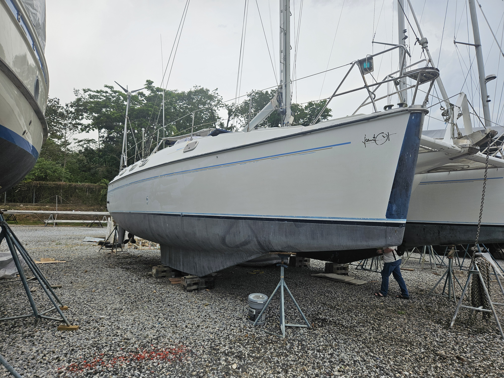

Documenting the adventurous journey of a Jeantot Privilege 12 catamaran from an old hull to high seas.

I found a Jeantot Priviege 12 catamaran sitting neglected in a boatyard in Guatemala. It had been there since the Covid pandemic that started in 2019. The owner,a German sailer, had not been able to return to the boat for 6 years and decided to sell it. This blog tracks the journey, the effort, the disappointments, and the small victories of restoring a multihull for blue-water cruising.
Drag slider to see progress
| Feature | Original | Status |
|---|---|---|
| Length Overall | 32' 0" | 34' 0" |
| Beam | 14' 6" | 14' 6" |
| Power | 2 Yanmar 4JH4AE | Diesel inboard |
| Sail Area | 650 sq ft | 650 sq ft |
| Displacement | 9000 kg | 9500 kg (estimated) |
| Cabins | 4 double | 4 double |